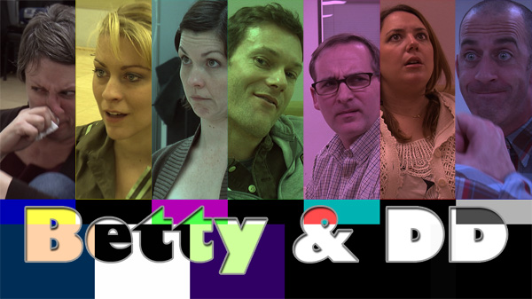

Betty & DD
Web Series
A comedic web series created by Shon Little & Julie Mitchell featuring two unconventional acting coaches navigating quirky on‑camera and off‑camera drama. Across episodes like "Non‑Camera Acting," "Documentary Style Acting," and "Scary Acting," the duo guides actors through playful and absurd scenarios—blending satire with improvisational charm.
Watch on YouTube